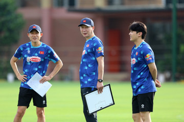
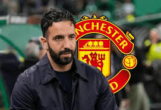
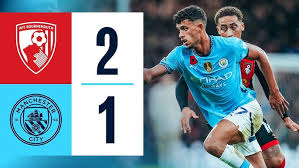

Mới nhất: Chelsea cầm hòa Manchester United với tỉ sô 1-1
MU dẫn trước nhưng chỉ có trận hòa 1-1 trước Chelsea ở vòng 10 Premier League trên sân Old Trafford.

HLV Kim Sang Sik ngược xuôi khắp V-League tới giải hạng Nhất để tìm thêm nhân tố cho tuyển Việt Nam
Rodri vượt qua Vinicius Jr để giành được Quả bóng Vàng 2024
Ban lãnh đạo CLB Man United đã chọn đương kim HLV Sporting Ruben Amorim ngồi vào ghế nóng thay thế HLV Erik Ten Hag vừa bị sa thải.

MU bổ nhiệm Ruben Amorim làm HLV mới thay thế Erik ten Hag
Ban lãnh đạo CLB Man United đã chọn đương kim HLV Sporting Ruben Amorim ngồi vào ghế nóng thay thế HLV Erik Ten Hag vừa bị sa thải.

Thất bại 1-2 trước Bournermoth, Man City đánh mất ngôi đầu bảng
Ban lãnh đạo CLB Man United đã chọn đương kim HLV Sporting Ruben Amorim ngồi vào ghế nóng thay thế HLV Erik Ten Hag vừa bị sa thải.